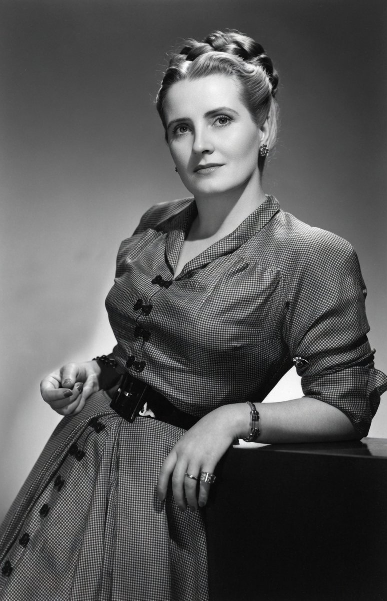

![]()
✕
‹
›
—
Fondo Histórico
Bibliotecas Universidad Adolfo Ibáñez

Sobre el fondo
Esposa de Gabriel González Videla, Presidente de Chile (1946–1952)
Rosa Markmann Reijer (Taltal, 1907 — Santiago, 2009), conocida como «Miti», fue Primera Dama de Chile entre 1946 y 1952. Fue la primera en ocupar un despacho propio en el Palacio de La Moneda, desde donde impulsó el derecho a voto de las mujeres, la creación de viviendas de emergencia y campañas de salud pública que marcaron su época. En 1952, durante una visita a Nueva York, el Comité Internacional de Madres de Norteamérica le otorgó el título de «Madre del Mundo», en reconocimiento a su labor social. Este fondo reúne parte de la correspondencia que recibió durante esos años: cartas de personas de todo Chile que le escribían solicitando ayuda, intercediendo por causas propias o agradeciendo su gestión — un retrato íntimo de una época a través de las voces de quienes le escribieron.
«Más que a mí, va dirigido a honrar la virtud de la mujer chilena.»Rosa Markmann, al recibir el título de «Madre del Mundo» — Nueva York, 1952
¿Por qué recibía y enviaba cartas?
Markmann fue la primera Primera Dama en instalar un despacho propio dentro de La Moneda, y desde ahí creó la Oficina de la Mujer: un equipo de abogadas, asistentes sociales y matronas dedicado a leer y gestionar las peticiones que llegaban de todo Chile. En un país con alto desempleo, escasez de vivienda y tuberculosis como enfermedad extendida, miles de personas le escribían pidiendo trabajo, casa, medicamentos o interviniendo ante el Presidente en causas particulares —como la carta que aquí se conserva—, y ella o su equipo respondían, derivaban la solicitud a un ministerio o gestionaban ayuda directa. Se conservan cerca de 8.000 cartas dirigidas a ella en el Archivo Nacional de Chile.
Regiones
Elige una región en la lista o directamente en el mapa para ver las cartas disponibles ahí.
Mapa de ChileOpenStreetMap
Selecciona una región en la lista para ver el mapa y las cartas disponibles.
Región
—